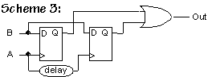
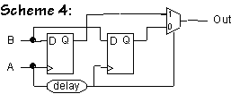
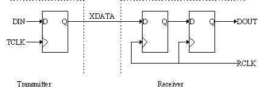
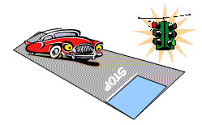

Problem 1.
Which of the following cannot be made to function with perfect
reliability, assuming reliable components and connections.
Explain your reasoning. Some of the specifications refer
to "bounded time" which means there is a specified time interval,
measured from the most recent input transition, after which the
output is stable and valid.
-
 A circuit that in unbounded time indicates which of two game show
contestants pressed their button first.
A circuit that in unbounded time indicates which of two game show
contestants pressed their button first.
-
A circuit that in bounded time indicates which of two game show
contestants pressed their button first.
-
A circuit that determines if button A was pressed before a specified
deadline. Assume the circuit has an accurate internal signal that
transitions from 0 to 1 when the deadline is reached. The output
should be 1 if the button was pressed on or before the deadline, 0 if
pressed after the deadline. The output should be valid and stable
within a specified tPD of the A input transition.
-
A circuit that in bounded time indicates which of two game show
contestants pressed their button first if the presses were more than
0.1 second apart, otherwise the circuit lights up a "TIE" light.
-
A circuit that in bounded time indicates that at least one button has
been pressed by some contestant.
-
A circuit that in bounded time indicates that exactly one of the
contestants has pressed their button. You can assume there are only
two contestants.
-
A circuit that has two parts: (a) a subcircuit that indicates which of
two game show contestants pressed their button first, and (b) a
subcircuit that in bounded time lights a "TIE" light if the (a)
subcircuit hasn't produced an answer after 1 second. The "TIE" light
should stay lit even if (a) makes a decision at some later point.
-
A circuit that converts button presses from two contestants into the
following two-bit output encoding. The circuit has two inputs, A and
B, one for each contestant. A contestant's input transitions from 0
to 1 when she presses her button.
00 if neither contestant is pressing their button
01 if contestant A is pressing her button
10 if contestant B is pressing her button
11 if both contestants are pressing their buttons
The output should be valid and stable within a specified tPD of
the most recent input transition.
Problem 2.
A judge is routinely given 60 seconds to make yes-or-no decisions.
Which of the following techniques allows him to do it with perfect
reliability, in light of the unrealizability of a perfect bounded-time
arbiter?
-
He can do it reliably simply by flipping a coin.
-
He can do it reliably by asking his clerk and responding "yes" unless
his clerk has answer in 55 seconds.
-
He can do it realiably by always answering "no", independently of
the question.
Problem 3.
Cambridge Logic and Magic, Inc is a new startup founded by a group of
ex-MIT students who dropped out of 6.004 just before Lecture 8. They
are trying to develop a reliable, bounded-time arbiter that behaves as
follows:
Two combinational inputs, A and B, each have a single 0-to-1
transition. The arbiter has a single output, which may be safely
sampled one microsecond following the transition on the A input, at
which point it is guaranteed (with 100% reliability) to have a valid
logic level. If the A transition precedes the B transition by more
than 100ns, the output is to be 0 when sampled; if the B transition
precedes A by more than 100ns, the output is to be 1 when sampled. If
the transitions are within 100ns of each other, either a 1 or a 0 may
be present. In all cases, the output is stable and valid for a 10ns
interval surrounding the time at which it is to be sampled.
The four CLMI founders each have a proposed design for such an
arbiter. Your job is to identify the problem in each design, citing a
specific scenario in which it fails to meet its spec. [If you're
unable to convince yourself that any scheme doesn't work, perhaps you
should consider dropping out and starting a company!]
Assume in the following designs that (1) All registers start in the 0
state; (2) that transitions on each of the input signals are
instantaneous and surrounded by long setup and hold times; and (3)
that component timings are short compared to the one microsecond
delay.
-
The first scheme involves a D register and a lenient MUX. It's
proponent argues that it can't go metastable, since the dynamic
discipline is always obeyed on the register inputs.

-
The second scheme involves a 50ns delay and a lenient OR gate. If the
output of the register is metastable, the inventor argues, the gate's
output will be forced to a valid level by the delayed copy of A. The
delay is 50 ns.

-
The third scheme involves a pair of D registers sharing the B input.
The delay is 50 ns, a time chosen to ensure that if setup/hold times
are violated for either of the registers the other will see valid
input timing. The OR gate is lenient.

-
The fourth scheme involves a pair of D register and a delay similar
to Scheme 3, but uses a MUX to select the output from a non-metastable
flipflop:

Problem 4.
Ben Bitdiddle has been hired as a consultant by Two Bit Electronics, a
firm specializing in communications channels that are two bits wide.
TBE has discovered that its latest product has been failing now and
then at various customer sites and is worried that the design may have
a problem with metastability.
Ben starts by checking the schematics for one bit of the transmission
channel:

-
A TBE engineer explains that although TCLK and RCLK have the same
frequency, their phases may differ. Ben notes with approval the 2
D-registers in the receiver, which are configured as a pulse
synchronizer, a circuit intended to ensure that the probability of
DOUT entering the metastable state is very small. Briefly explain how
the pulse synchronizer accomplishes this goal. Hint: Because the
input to the receiver is asynchronous with RCLK, the left-most
register in the receiver can enter a metastable state. But the
probability that the input to the right-most register in the receiver
does not meet that register's setup time can be made as small as
desired by increasing the period of RCLK. Why?
-
The engineer now shows Ben the schematic for a test jig that he says
illustrates the problem that's been discovered. The test jig consists
of two one-bit channels running in parallel with the two DIN inputs of
the transmitter connected to a single data stream. The DOUT outputs
of the two receivers are connected to an XOR gate that, in theory,
should always produce a "0" since both receivers are getting the same
data stream. In order to filter out any glitches in the XOR output
introduced by small differences in tPD of the output registers of the
two receivers another register has been added to the output of the XOR
gate:
 Every once in a while TEST is observed to be "1" for one period of
RCLK. Give a brief explanation of why this happens. You can assume
that DIN is meeting the setup time of the transmitter registers and
that the value for DIN changes much less frequently than TCLK/RCLK.
Hint: it has nothing to do with the register that was added to
deglitch the TEST output. Think about what's happening in the two
pulse synchronizers and why they might generate different outputs for
a single clock cycle.
Every once in a while TEST is observed to be "1" for one period of
RCLK. Give a brief explanation of why this happens. You can assume
that DIN is meeting the setup time of the transmitter registers and
that the value for DIN changes much less frequently than TCLK/RCLK.
Hint: it has nothing to do with the register that was added to
deglitch the TEST output. Think about what's happening in the two
pulse synchronizers and why they might generate different outputs for
a single clock cycle.
-
TBE now realizes that their plan to send two bits at a time by using
two independent synchronizers won't work. "Okay," they say, "we'll
just transmit one bit at a time, use a single synchronizer and crank
up the clock frequency." Ben observes that this circuit still won't
result in completely accurate communication, i.e., the waveform
produced by the receiver on DOUT still won't be the same as the
waveform produced by the transmitter on XDATA. Give a brief
explanation of why Ben is right.
-
Ben explains that communications between asynchronous systems is a
tricky business! If the input stream isn't too fast compared to the
receive clock, a pulse synchronizer will reliably reproduce any
transitions in the input waveform, although the exact timing between
the transitions in the output waveform will not the same as in the
incoming waveform.
[Hard] Can you think of a way to encode a bit stream using
transitions rather than levels to convey the information? Describe
your encoding scheme and the signals that would be output by your
receiver.
Problem 5.

From the weekly Campus Police report: Ben Bitdiddle left the Bit
Bucket Cafe and approached the nearby fork in the road. He hits the
barrier in the middle of fork, later explaining "I can't be expected
to decide which side of the fork to take in bounded time!."
-
Is the accident Ben's fault?
Problem 6.

Here's an everyday situation: you have a traffic intersection
controlled by a traffic light with the normal green, yellow,
red sequence. There's a 55 MPH speed limit and the yellow
and green periods of the traffic light are sufficiently long.
I.e., the yellow is long enough to ensure that a car traveling
at or below the speed limit can come to a halt before the
stop line, and the green is long enough to ensure that a
car stopped at the stop line can accelerate and cross the
intersection before the green period is over.
The car is supplied with digital GREEN, YELLOW and
RED inputs from the traffic light and also has an analog
POSITION input giving the distance from the stop line.
The car's controller produces a digital GO output that
controls the motion of the car.
The car is
is expected to behave reasonably -- e.g. to make normal
progress in the absence of a red light.
-
Is it possible to build a controller that reliably obeys
Law #1: "don't cross the stop line when the light is red"?
-
Is it possible to build a controller that reliably obeys
Law #2: "don't be in the intersection when the light is red"?